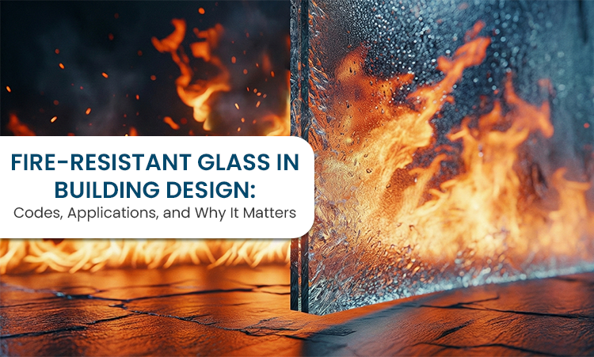

Fire-Resistant Glass in Building Design: Codes, Applications & Why It Matters
Fire safety rarely feels urgent when a building is new. Everything works. Systems are in place. Materials are approved. Once construction is done, attention moves elsewhere. Fire protection becomes something assumed, not actively thought about.
Glass often sits in that same category. It's chosen for how it looks, how much light it lets in, how open a space feels. Its role during a fire is rarely part of early conversations, even though glass now appears in more critical parts of buildings than ever before. That shift has changed what glass is expected to do.
Why Glass Can Become a Problem During a Fire
Glass behaves well in everyday conditions. Under fire, it's a different story. Standard glass doesn't tolerate heat for long. It cracks. It gives way. When that happens, spaces that were meant to stay separate suddenly connect. Smoke moves faster. Heat spreads. Escape routes become unsafe earlier than planned.
Once that barrier fails, control is lost quickly. Fire resistant glass exists to delay that moment. Not to stop fire entirely, but to slow what happens next.
What Fire-Resistant Glass Is Really Meant For
Fire-resistant glass is designed to hold its place when conditions become extreme. Some types focus on staying intact. Others also limit how much heat passes through. That difference matters more than it sounds. A panel that looks fine but allows intense heat through can still create danger on the other side.
This is why fire-resistant glass is not a single solution. Where the glass is used matters. What it protects matters. How long it needs to perform matters. These decisions affect what type of glass actually makes sense.
How Codes Shape Its Use in Buildings
Fire-resistant glass doesn't get used randomly. Certain parts of a building have stricter expectations. Stairways. Corridors. Areas meant to slow fire or guide people out. These requirements come from observing what actually happens during a fire and how people react when visibility drops and time feels compressed.
Organisations like the NFPA outline these standards to ensure buildings allow time. Time to evacuate. Time for response. Time for control. Problems usually arise when fire-resistant glass is treated as a late addition. When it's added for approval rather than integrated into design. At that point, compromises are common.
Where Fire-Resistant Glass Is Commonly Used
In modern buildings, fire-resistant glass shows up in practical places. Stairwells use it to bring in light without losing fire separation. Corridors rely on it to guide movement while containing smoke. Commercial buildings use it to keep spaces open without removing safety barriers.
In each case, the glass is doing more than closing an opening. It's supporting how the building behaves during an emergency.
Why Timing Matters More Than People Expect
Fire-resistant glass works best when it's planned early. Early decisions allow proper framing, correct ratings, and smoother installation. Late decisions lead to adjustments. Costs rise. Performance expectations get lowered.
Early planning also reduces misuse. Not all fire-rated glass is interchangeable. Using the wrong type in the wrong place creates risk, even if paperwork looks compliant.
Manufacturing Quality Shows Up When It's Tested
Fire performance depends heavily on how the glass is made. Composition, bonding, interlayers, and edge treatment all affect how the glass behaves under stress. These details rarely matter during daily use. They matter when temperatures rise suddenly.
Poor manufacturing doesn't always fail immediately. It fails when conditions are at their worst. That's why builders and consultants look beyond labels and ratings. They look for consistency and testing.
Manufacturers like TUFFTRON focus on supplying fire-resistant glass with real building conditions in mind, not just compliance checklists.
Why Fire-Resistant Glass Is No Longer Optional
As buildings use more glass, tolerance for failure drops. Fire-resistant glass has moved from being a specialised product to a practical requirement. It allows transparency without giving up protection. It supports design without weakening safety.
The benefit isn't obvious on normal days. It shows up only when something goes wrong.
Closing Thought
Fire-resistant glass rarely draws attention to itself. Most of the time, it sits quietly, doing nothing noticeable. That's exactly what it's meant to do.
When it's chosen thoughtfully and integrated properly, it supports safety when pressure is highest. In modern building design, that quiet reliability is what makes it matter.